Giao diện 4 Tab Tiện ích trên SEnglish
Ứng dụng được thiết kế trực quan với thanh điều hướng 4 tab tiện lợi ở đáy màn hình:
- 📖 Tab 1 - Từ vựng: Sổ từ vựng cá nhân, thêm từ mới và 6 chế độ luyện tập.
- 📁 Tab 2 - Chủ đề: Học từ vựng theo chủ đề, gom nhóm theo chứng chỉ (Toeic, CEFR, JLPT...).
- 📊 Tab 3 - Thống kê: Xem tỉ lệ nhớ đúng, 4 chỉ số và nút Ôn ngay từ đang làm sai.
- ⚙️ Tab 4 - Cài đặt: Tùy chỉnh tự qua màn, bật nhắc nhở, đổi ngoại ngữ và tải file mẫu Excel.
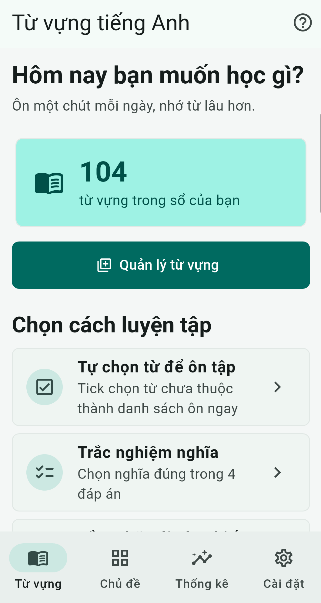
🔍 Phóng toẢnh chụp thực tế màn hình chính (SM-G960F)
Cài đặt Tự động qua câu & Nút "Tiếp theo"
Trong các bài luyện tập (Trắc nghiệm, Điền từ, Nối từ...), bạn có toàn quyền chọn: Tự động đếm giây qua câu kế tiếp hoặc Hiện nút "Tiếp theo" để bạn chủ động bấm khi đã đọc kỹ.
Vào Cài đặt > Chọn "Tự động qua câu"
Mở tab Cài đặt (biểu tượng bánh răng ở góc dưới phải màn hình chính). Cuộn đến mục Âm thanh & rung và chạm vào dòng "Tự động qua câu".
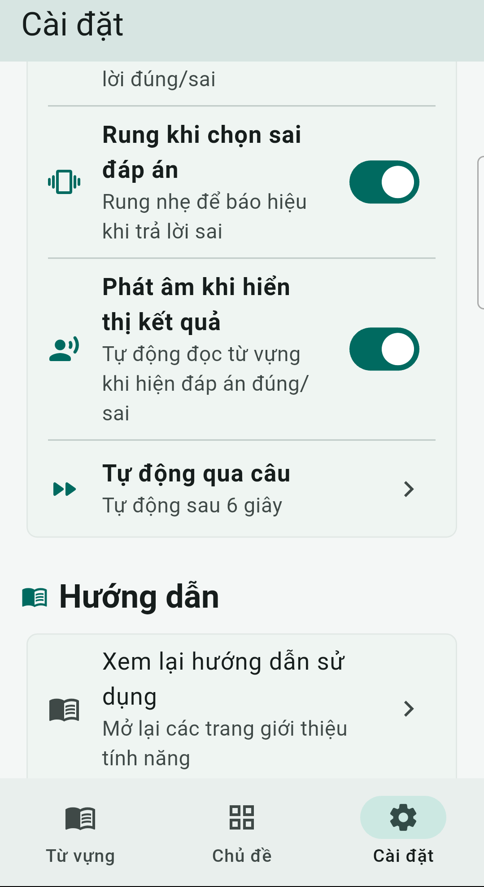
🔍 Phóng toMục "Tự động qua câu" hiển thị trạng thái hiện tại (vd: Tự động sau 6 giây)
Chọn 1 trong 4 chế độ chuyển câu
Bảng chọn hiện lên với 4 chế độ linh hoạt:
• Tự động sau 2 giây: Qua câu siêu nhanh, phù hợp luyện phản xạ.
• Tự động sau 4 giây: Vừa phải để nhìn lại đáp án.
• Tự động sau 6 giây: Đủ thời gian nghe phát âm và ghi nhớ.
• Tự bấm (hiện nút Tiếp theo): Giữ nguyên câu trả lời cho đến khi bạn bấm.
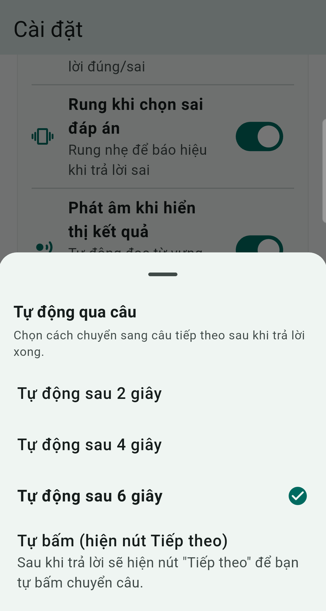
🔍 Phóng toBảng 4 lựa chọn chuyển câu xuất hiện ở đáy màn hình
Xác nhận chế độ đã chọn
Khi bạn chọn "Tự bấm (hiện nút Tiếp theo)", dòng cài đặt sẽ cập nhật ngay với biểu tượng ngón tay chạm và phụ đề "Tự bấm (hiện nút Tiếp theo)".
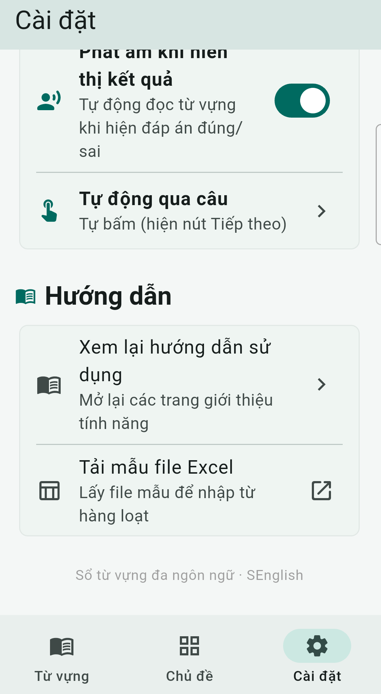
🔍 Phóng toGiao diện Cài đặt sau khi kích hoạt chế độ Tự bấm
Màn hình thực tế khi trả lời câu hỏi: Tự động vs Tự bấm
Quan sát sự khác biệt trực tiếp trên màn hình luyện tập Trắc nghiệm giữa 2 chế độ:
Màn hình tự động qua câu kế tiếp
Khi bạn chọn đáp án, ứng dụng kiểm tra ngay lập tức:
- Hiện thông báo "Chính xác!" hoặc báo sai kèm rung/âm thanh.
- Tự động đọc phát âm từ vựng bằng giọng bản xứ chuẩn.
- Không có nút bấm ở dưới cùng: Máy tự động đếm giây và chuyển sang câu mới. Bạn không cần chạm vào màn hình!
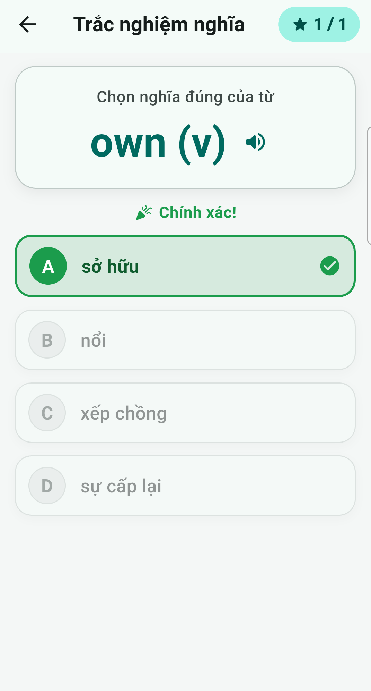
🔍 Phóng toẢnh thật: Trả lời xong, đếm giây tự chuyển, không có nút ở đáy
Xuất hiện nút [➔ Tiếp theo] màu xanh
Khi bạn chọn đáp án, màn hình giữ nguyên kết quả:
- Hiện đáp án và đọc phát âm để bạn nghe kỹ lại.
- Xuất hiện nút [➔ Tiếp theo] màu xanh nổi bật ở đáy màn hình.
- Màn hình không bao giờ tự nhảy! Bạn có thể đọc kỹ từ loại, phiên âm, ví dụ. Khi nào sẵn sàng thì mới chạm "Tiếp theo".
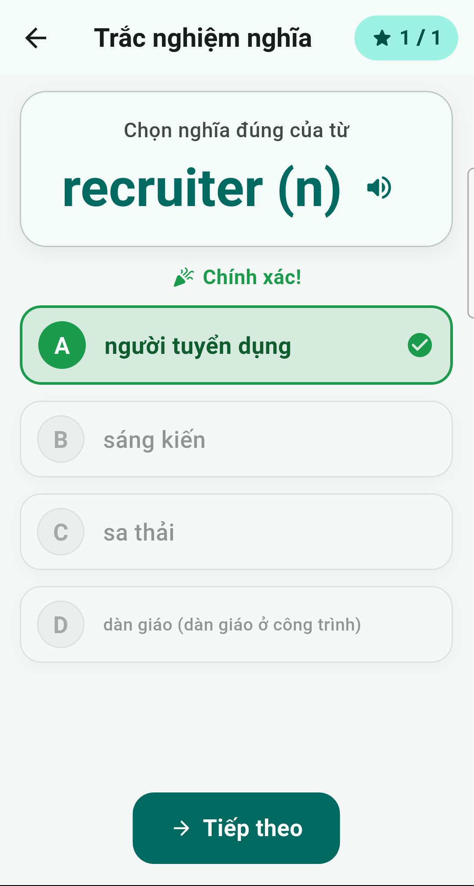
🔍 Phóng toẢnh thật: Nút [➔ Tiếp theo] màu xanh xuất hiện ở cuối màn hình
Thông báo Nhắc nhở Học tập & Chỉ tiêu mỗi ngày
Học từ vựng quan trọng nhất là sự đều đặn. SEnglish tích hợp hệ thống nhắc nhở thông minh chạy 100% offline, định kỳ gửi thông báo động về trung tâm thông báo điện thoại của bạn.
Thiết lập số từ mục tiêu mỗi ngày
Trong mục Mục tiêu học tập (tab Cài đặt), bấm nút [+] hoặc [-] để đặt chỉ tiêu (ví dụ 10 từ/ngày, 20 từ/ngày). Con số này sẽ được đưa vào nội dung thông báo hàng ngày.
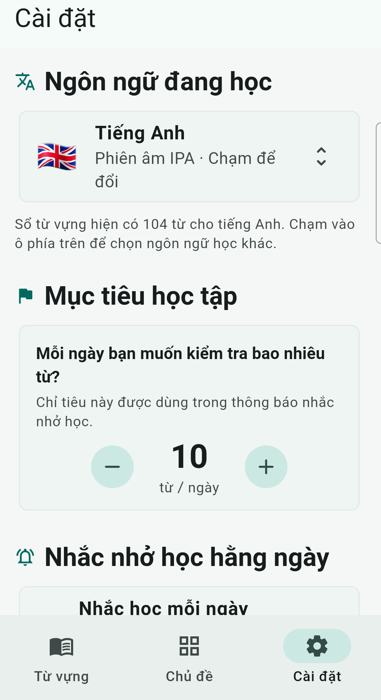
🔍 Phóng toĐặt chỉ tiêu từ vựng và xem mục nhắc học
Bật công tắc "Nhắc học mỗi ngày"
Gạt công tắc sang trạng thái BẬT (màu xanh). Ngay dưới sẽ hiện dòng xem trước nội dung: Nội dung thông báo: "Bạn cần ôn 10 từ hôm nay để đạt chỉ tiêu.".
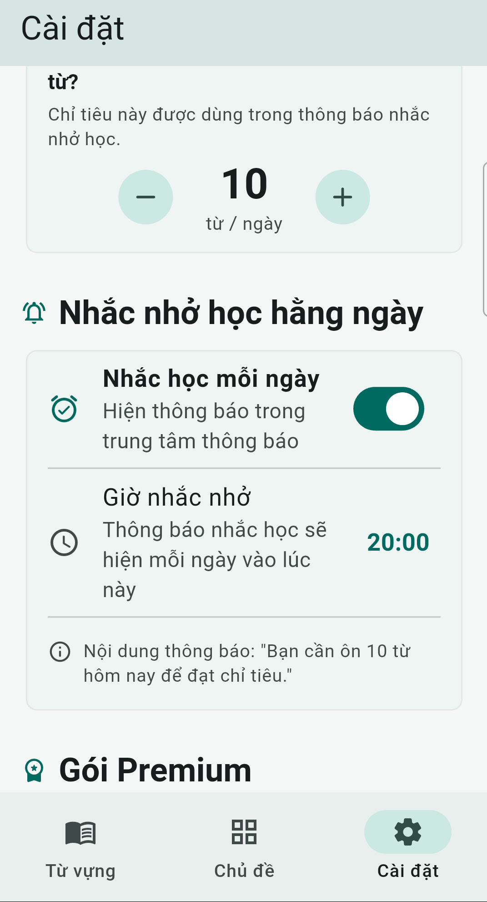
🔍 Phóng toCông tắc bật nhắc học và nội dung thông báo mẫu
Chọn khung giờ nhắc nhở qua đồng hồ
Chạm vào ô "Giờ nhắc nhở" để mở đồng hồ chọn giờ (ví dụ 20:00 buổi tối sau khi cơm nước xong, hoặc 07:00 sáng trước khi đi làm/đi học).
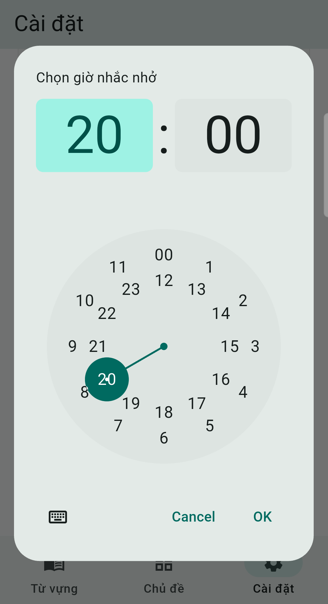
🔍 Phóng toĐồng hồ trực quan cho phép chọn chính xác giờ và phút
👉 Khi bạn chạm vào thông báo trên điện thoại, app sẽ mở ngay lập tức để bạn vào ôn tập mà không bị đứt quãng thói quen.
Chọn & Chuyển đổi Ngôn ngữ Học tập
SEnglish hỗ trợ học song song nhiều ngoại ngữ: Tiếng Anh, Tiếng Nhật, Tiếng Hàn, Tiếng Trung (Giản/Phồn thể), Tiếng Pháp, Đức, Tây Ban Nha... Mỗi ngôn ngữ sở hữu sổ từ vựng, phiên âm chuẩn và phát âm hoàn toàn độc lập.
Mở bảng chọn ngôn ngữ
Tại đầu trang Cài đặt, chạm vào ô "Ngôn ngữ đang học" (có lá cờ quốc gia và tên phiên âm).
Khung ngôn ngữ đang học luôn nằm ở đầu trang Cài đặt
Chọn ngôn ngữ kèm hệ thống phiên âm chuẩn
Hộp thoại hiển thị các ngôn ngữ cùng bộ phiên âm chuyên biệt:
• Tiếng Anh: Phiên âm quốc tế IPA chuẩn Oxford.
• Tiếng Nhật: Phiên âm chữ Romaji.
• Tiếng Hàn: Phiên âm Romaja.
• Tiếng Trung: Phiên âm Pinyin (Bính âm).
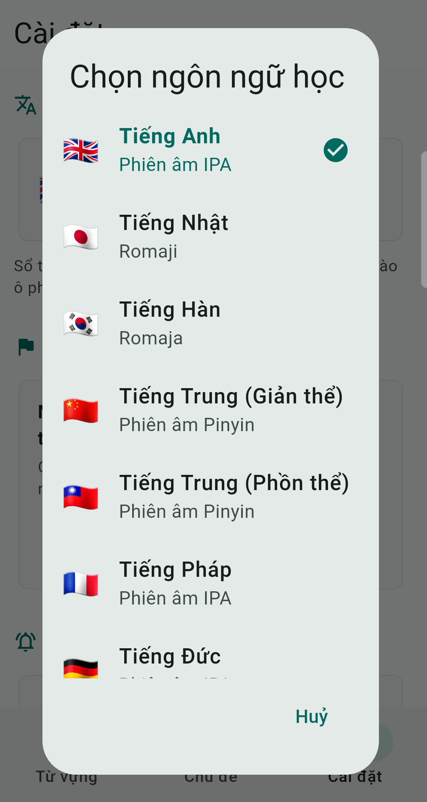
🔍 Phóng toDanh sách ngôn ngữ kèm hệ thống phiên âm tương ứng
Chuyển đổi tức thì & Sổ từ riêng biệt
Ngay sau khi chạm chọn, thông báo xác nhận xuất hiện: "Đã chuyển sang tiếng Anh • 104 từ trong sổ". Toàn bộ chế độ luyện tập, phát âm và bộ chủ đề sẽ tự động chuyển sang ngôn ngữ mới.
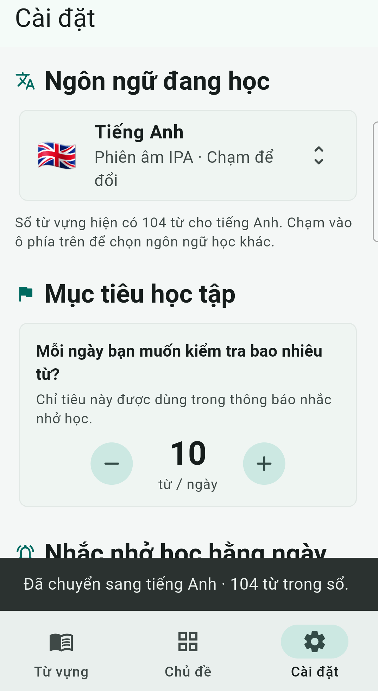
🔍 Phóng toThông báo chuyển đổi thành công ở đáy màn hình
Theo dõi Thống kê Học tập & Ôn lại Từ hay Sai
Tab "Thống kê" (biểu tượng đồ thị trên thanh điều hướng dưới) giúp bạn nắm bắt chính xác tỉ lệ nhớ đúng, tiến độ học từ cá nhân và từng chủ đề, đồng thời cung cấp tính năng Ôn ngay các từ đang còn yếu.
Tỉ lệ nhớ đúng & 4 chỉ số tổng quát
Thẻ Hero xanh ngọc hiển thị Tỉ lệ nhớ đúng (%), thanh tiến độ số từ đã học trên tổng số từ trong sổ.
Ngay bên dưới là 4 ô thống kê 2x2 trực quan:
• Lượt đúng (Xanh lá): Tổng số câu trả lời chính xác.
• Lượt sai (Đỏ hồng): Số lần chọn hoặc gõ sai.
• Từ đã học (Xanh dương): Số từ bạn đã từng làm bài kiểm tra.
• Từ đang sai (Cam vàng): Số từ bạn chưa ghi nhớ tốt.
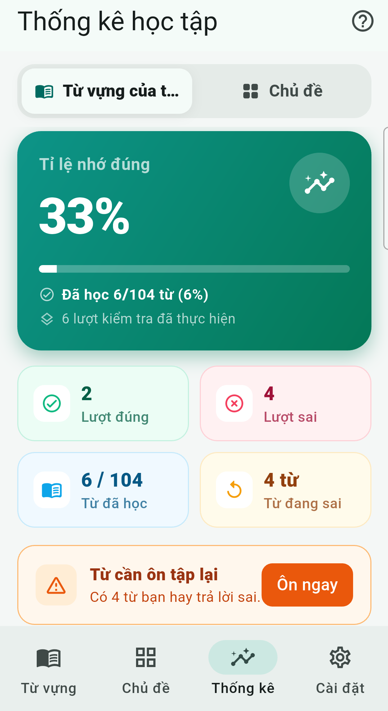
🔍 Phóng toMàn hình Thống kê - Phân hệ Từ vựng của tôi
Cảnh báo "Từ cần ôn tập lại" & Nút "Ôn ngay"
Khi bạn trả lời sai một từ trong bất kỳ bài tập nào, thẻ cảnh báo màu cam sẽ tự động xuất hiện:
"Có [x] từ bạn hay trả lời sai."
Chỉ cần chạm nút "Ôn ngay" màu cam, ứng dụng lập tức mở bài luyện tập tập trung riêng cho các từ này
để bạn khắc phục lỗ hổng ghi nhớ ngay tức thì!
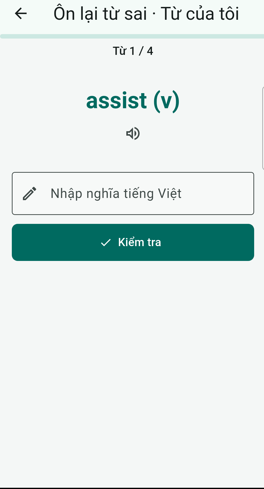
🔍 Phóng toMàn hình Ôn lại từ sai mở ngay sau khi bấm nút Ôn ngay
Thống kê phân hệ "Chủ đề"
Chạm vào nút chuyển đổi "Chủ đề" ở đầu trang Thống kê. Giao diện chuyển sang tông tím hiện đại, hiển thị tỉ lệ đúng của toàn bộ các chủ đề, số từ chủ đề đã học và số chủ đề thuộc các nhóm từ vựng.
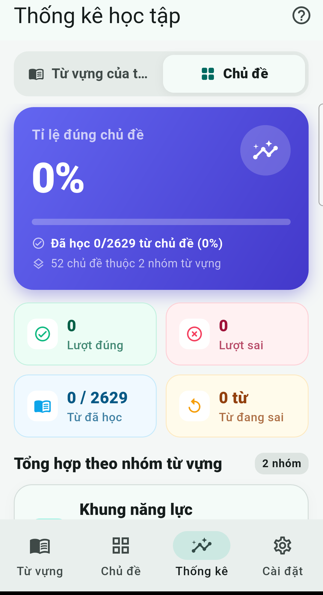
🔍 Phóng toThẻ tổng quan tiến độ của toàn bộ hệ thống chủ đề
Bảng chi tiết tiến độ từng nhóm và chủ đề
Cuộn xuống dưới để xem báo cáo chi tiết theo từng nhóm: Khung năng lực châu Âu (B2 700 từ, C1 1314 từ), Toeic (50 chủ đề). Mỗi chủ đề hiển thị rõ trạng thái Đã học / Chưa học, số lượt đúng/sai và nút mở chi tiết thống kê.
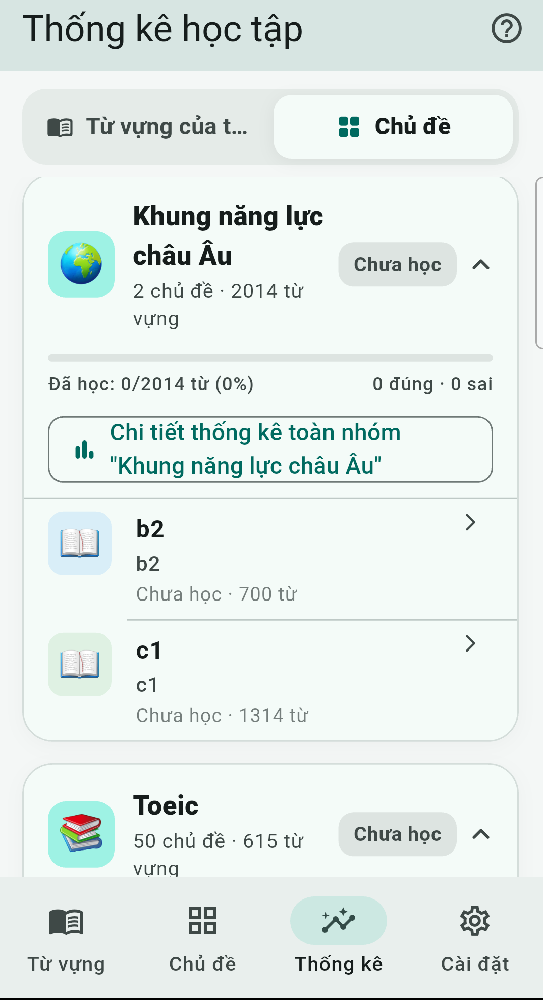
🔍 Phóng toBảng chi tiết tiến độ từng nhóm chủ đề và bài học nhỏ
Nhóm Từ Vựng & Gom Chủ Đề Chuyên Biệt
Dễ dàng phân loại và chọn lọc kho tài nguyên phong phú theo từng mục tiêu học tập cụ thể: Toeic (50 chủ đề • 615 từ), Khung năng lực châu Âu CEFR (B2, C1 • 2014 từ), hoặc Tiếng Nhật JLPT (N5, N4, N3).
Chọn nhóm từ vựng qua Dropdown selector
Tại tab "Chủ đề" (tab thứ 2 trên thanh điều hướng dưới),
chạm vào ô "Nhóm từ vựng" ở góc trên bên trái.
Menu dropdown sẽ mở ra với các nhóm có sẵn kèm biểu tượng sinh động và tổng số chủ đề/từ vựng của từng nhóm.
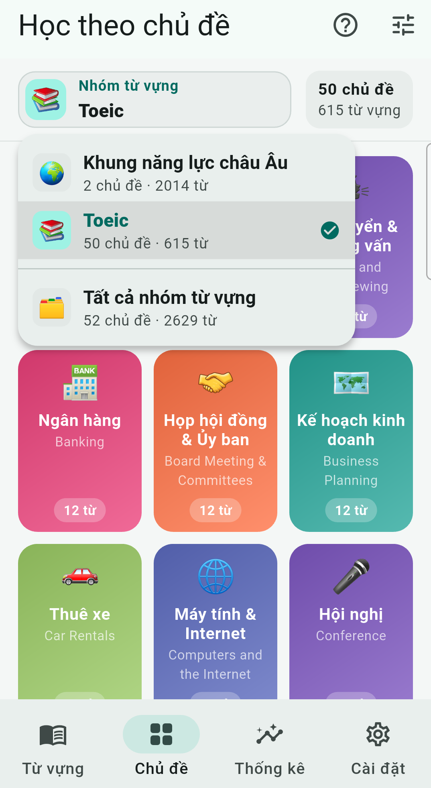
🔍 Phóng toMenu chọn nhóm từ vựng trực quan (Toeic, CEFR, Tất cả nhóm...)
Lọc gọn gàng theo nhóm đã chọn
Khi bạn chọn một nhóm (ví dụ: Khung năng lực châu Âu), màn hình sẽ lập tức lọc và chỉ hiển thị
các chủ đề thuộc nhóm đó (B2 - 700 từ, C1 - 1314 từ).
Huy hiệu góc trên bên phải báo rõ: "2 chủ đề • 2014 từ vựng", giúp bạn tập trung cao độ vào đúng lộ trình ôn luyện.
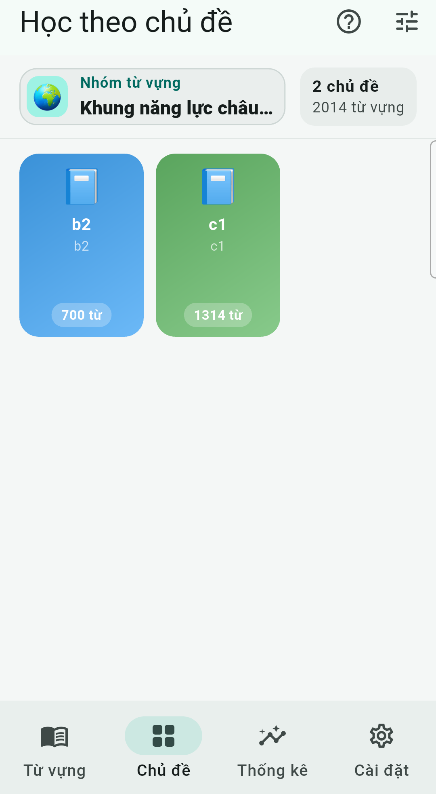
🔍 Phóng toMàn hình sau khi lọc theo nhóm Khung năng lực châu Âu
Khám phá hơn 50 chủ đề Toeic đầy đủ
Khi chọn nhóm Toeic, bạn có trong tay trọn vẹn 50 chủ đề thông dụng nhất trong bài thi Toeic:
Kế toán, Hàng không, Phỏng vấn, Ngân hàng, Họp hội đồng, Kinh doanh, Thuê xe, Máy tính...
Thẻ màu rực rỡ và biểu tượng 3D giúp bạn dễ dàng nhận diện và tạo hứng thú học tập.
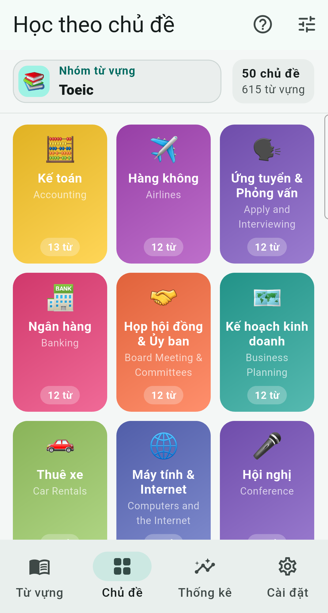
🔍 Phóng toLưới chủ đề Toeic 3 cột màu sắc bắt mắt kèm số lượng từ
Xem từ vựng, nghe phát âm & Quản lý dữ liệu
Chạm vào chủ đề để mở bảng từ vựng chi tiết, nghe phát âm giọng bản xứ và bấm "Ôn tập".
Ngoài ra, biểu tượng bộ lọc [tune] trên thanh tiêu đề cho phép bạn vào màn hình
Quản lý dữ liệu chủ đề để kiểm tra nguồn từ vựng bất cứ lúc nào!
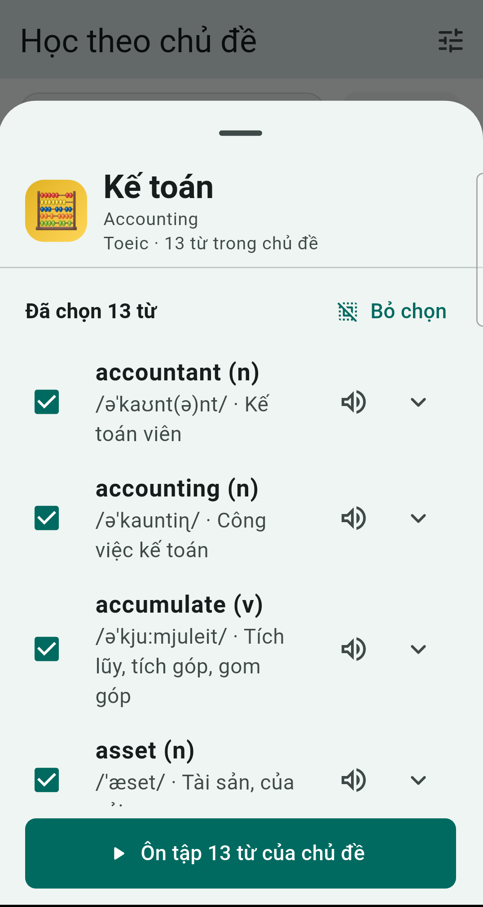
🔍 Phóng toBảng từ vựng chi tiết kèm phiên âm IPA chuẩn và nút Ôn tập
6 Chế độ Luyện tập & Ôn đúng từ Chưa thuộc
Thay vì chỉ lướt thẻ từ vựng một cách thụ động, SEnglish cung cấp 6 cách kiểm tra tương tác đa giác quan kèm thuật toán thống kê từ hay trả lời sai để bạn dứt điểm từ khó.
Danh sách các chế độ trên Tab Từ vựng
Tại màn hình chính, cuộn xuống phần "Chọn cách luyện tập" để bấm vào bất kỳ bài tập nào bạn muốn thử sức hôm nay.
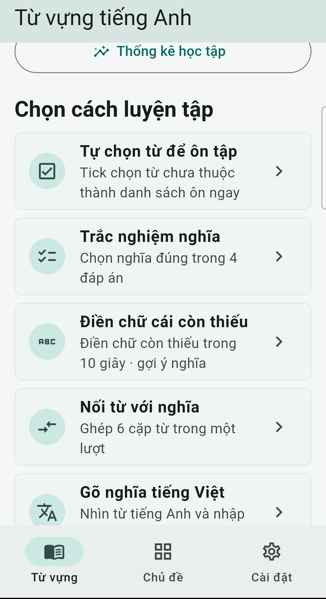
🔍 Phóng toMàn hình danh sách các chế độ luyện tập phong phú
Tính năng: Tự chọn từ để ôn tập (Chưa thuộc)
App tự động ghi nhận số lượt Đúng/Sai. Khi vào "Tự chọn từ để ôn tập", chuyển sang tab "Chưa thuộc" để xem danh sách những từ bạn từng làm sai (vd: assist sai 1, handle sai 1...). Tick chọn những từ cần học lại và bấm "Chọn từ để ôn tập"!
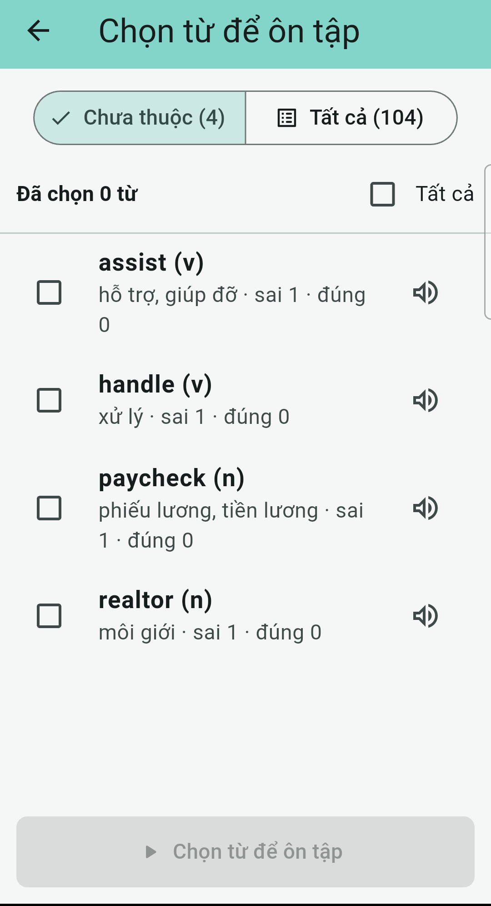
🔍 Phóng toLọc riêng từ chưa thuộc kèm số lần đúng/sai chi tiết
Quản lý Sổ Từ Vựng & Thêm từ hàng loạt qua Excel
Chủ động mở rộng sổ từ vựng cá nhân: Tự thêm từ mới kèm phiên âm IPA chuẩn tra cứu tự động, hoặc nạp hàng trăm từ cùng lúc thông qua tệp bảng tính Excel (.xlsx / .xls).
Vào "Quản lý từ vựng" từ Tab Từ vựng
Tại tab "Từ vựng" (tab đầu tiên), chạm vào nút xanh "Quản lý từ vựng" để xem toàn bộ danh sách từ trong sổ, tìm kiếm từ nhanh và chỉnh sửa khi cần.
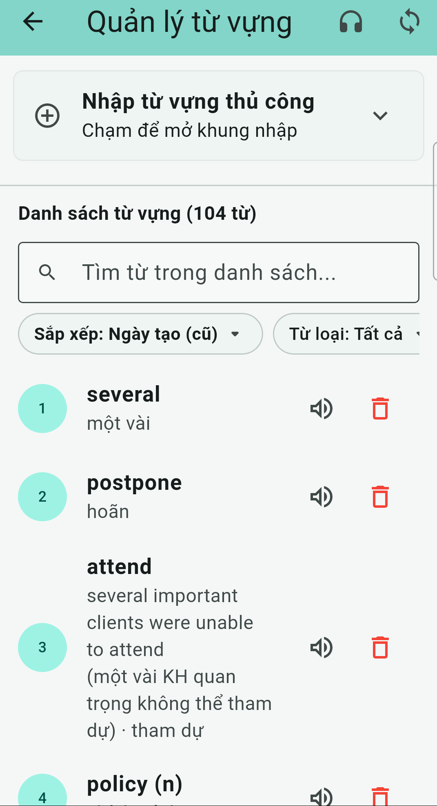
🔍 Phóng toMàn hình Quản lý sổ từ vựng cá nhân
Thêm từ thủ công với tính năng tra IPA tự động
Bấm biểu tượng dấu cộng (+) hoặc nút thêm từ. Nhập từ vựng, hệ thống sẽ tự động tra phiên âm chuẩn quốc tế IPA và nghĩa tiếng Việt tương ứng, bạn không phải gõ tay phiên âm!
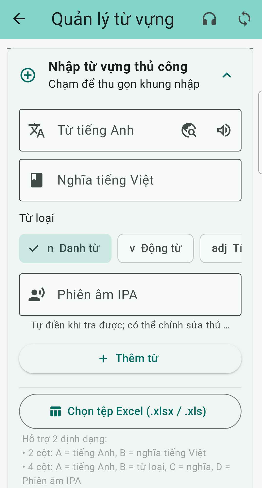
🔍 Phóng toGiao diện thêm từ tự tra IPA và nghĩa
Nhập hàng loạt từ file Excel (.xlsx / .xls)
Bấm "Nhập từ Excel" để chọn file từ điện thoại của bạn. Hỗ trợ file 2 cột hoặc 4 cột.
👉 Bạn có thể tải file mẫu chuẩn ngay tại tab Cài đặt hoặc trên trang web SEnglish.
Nút nhập Excel nằm ngay trên đầu màn hình Quản lý từ vựng